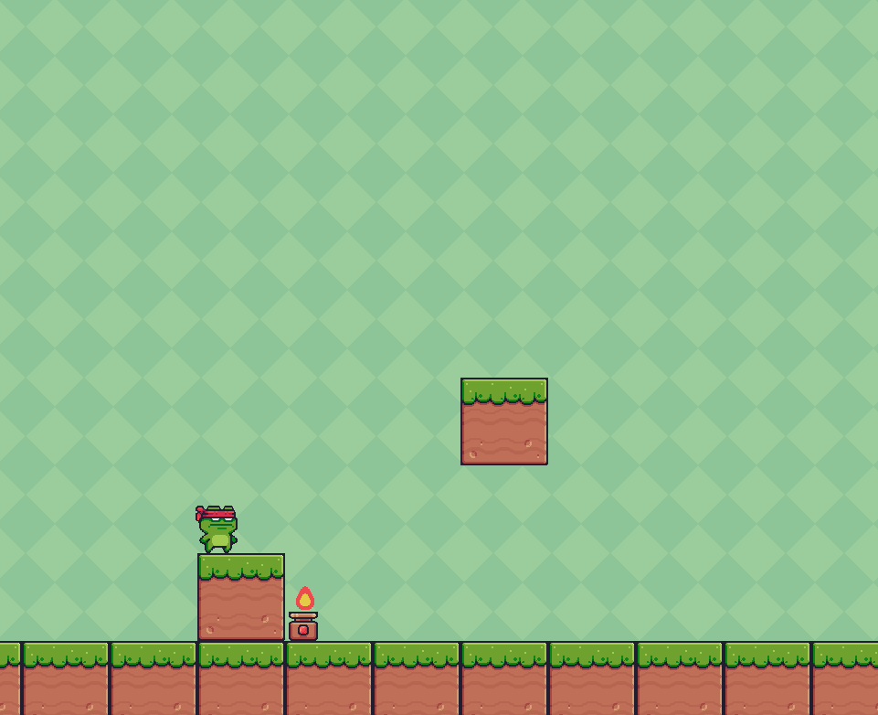

Introduction

Hello! I'm Taioh Kubota, a Software Engineer with a background in biology and healthcare. I have recently completed Springboard's Software Engineering Career track where I have learned the latest web development skills. I enjoy combining my passion for helping people and technology to create tools which are user-friendly and beneficial. Please feel free to check out my work here.
I have worked as a Analyst for a Newborn Screening program. I have independently validated new screening procedures and obtained great data analysis skills. I have worked as a Orthopedic Assistant as well as a Emgergency Medical Technician where I have developed realistic problem-solving and prioritization skills in order to address difficult situations and help improve the patients' health.
Pet Furends

JavaScript | Express.js | Node.js | React.js | PostgreSQL | Bootstrap | HTML | CSS
This project was created to solve the homeless pet crisis. Users are able to find suitable pets based on the search input. Using the Petfinder API, pets can be searched and filtered, displaying information about their traits, location, and host organization. Find the pet of your dreams while also helping to reduce homeless pets!
Recipe Search
Python | Flask | SQLALchemy | WTForms | Bcrypt | Jinja | PostgreSQL | HTML | CSS |
Cooking food for yourself or your family can be stressful as you might run out of ideas. I created this app because I was having that issue. This web application brings your mind to ease! Simply input the ingredients that you have readily available at home and it will populate a list of recipes that can be created using those ingredients!
Ninja Frog

Python | Pygame
A platformer game that I created just for fun! I enjoy playing and watching video games so I have always wanted to try making one. I had a great time learning new libraries and practicing Python from a different perspective.
Contact
Contact Information